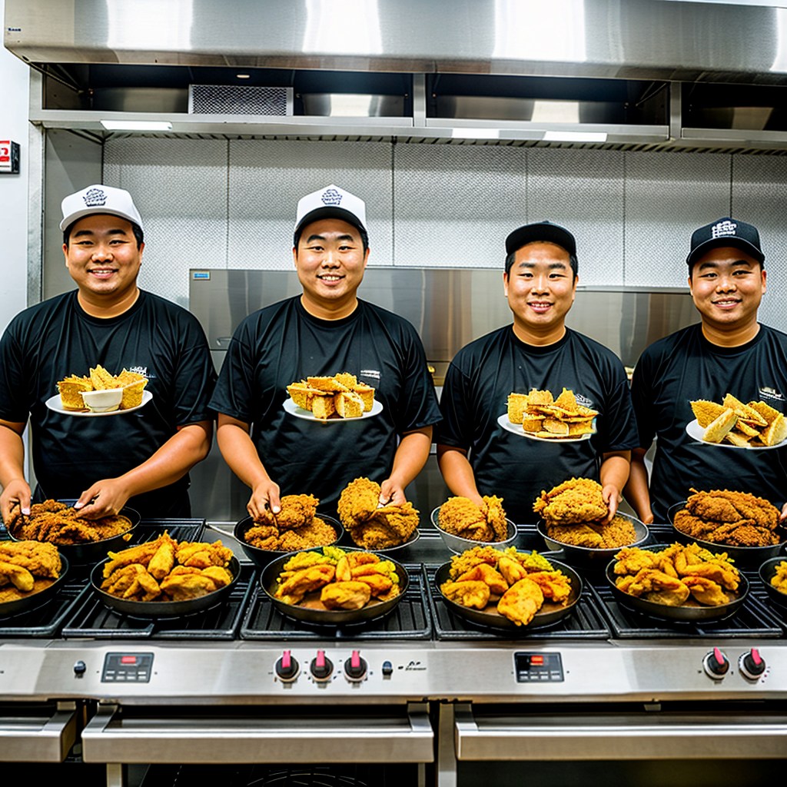
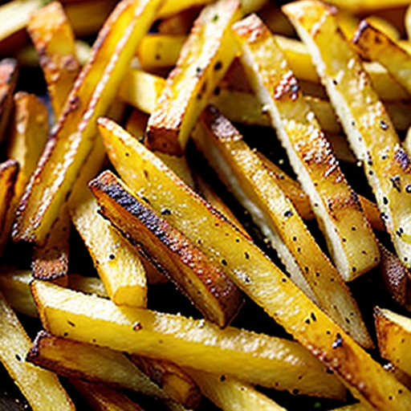
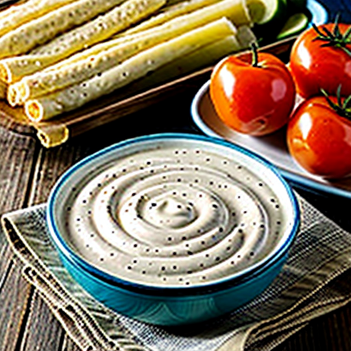

Welcome to Crispy Haven
Your Ultimate Fried Chicken Destination!
Our restaurant is dedicated to providing an exceptional dining experience with a focus on fresh, locally sourced ingredients. Our culinary vision is to create innovative dishes that delight the senses and celebrate the art of cooking.
At Crispy Haven, we believe that fried chicken is not just a meal; it's a celebration of flavor, comfort, and community. Nestled in the heart of Toronto, our restaurant is dedicated to serving up the most delicious, crispy fried chicken you've ever tasted.
View Our Menu
Our Story

Founded by a passionate team of culinary enthusiasts, Crispy Haven started with a simple
mission: to create the perfect fried chicken.
We draw inspiration from traditional recipes while incorporating modern techniques to ensure
every bite is packed with flavor.
Our secret blend of spices and high-quality ingredients makes our chicken irresistibly
crispy on
the outside and juicy on the inside.
Founded by a passionate team of culinary enthusiasts, Crispy Haven started with a simple
mission: to create the perfect fried chicken.
We draw inspiration from traditional recipes while incorporating modern techniques to ensure
every bite is packed with flavor.
Our secret blend of spices and high-quality ingredients makes our chicken irresistibly
crispy on
the outside and juicy on the inside.
What We Offer Read more on the Specials Page
-
Signature Fried Chicken

Available in various styles, from classic Southern buttermilk to spicy Nashville hot. -
Tasty Sides

Complement your meal with our homemade sides, including creamy coleslaw, buttery biscuits, and seasoned fries. -
Sauces Galore

Choose from an array of house-made dipping sauces that elevate your chicken experience. -
Family Meals

Perfect for gatherings, our family meals offer generous portions at great value.
Community Focus
At Crispy Haven, we're not just about serving great food.
We're about building community.
We source our ingredients locally whenever possible and actively support local farmers and
producers.
Join us for special events, fundraisers, and community nights where we give back to the
neighborhood that supports us.
Join Us!
Whether you're dining in with friends and family or grabbing a quick bite to go, we invite you
to experience the joy of crispy fried chicken at Crispy Haven.
Come hungry, leave happy! We can't wait to serve you!